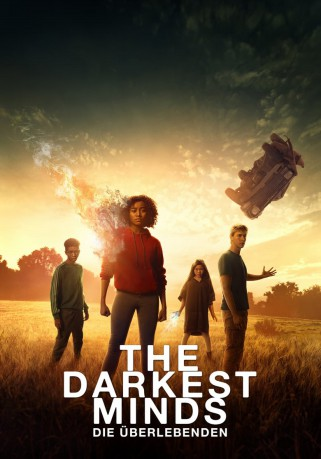

#9828 The Darkest Minds - Die Überlebenden
Alternativ: The Darkest Minds
 
 IMDB-Wertung: 5.6 / 10
IMDB-Wertung: 5.6 / 10  Metascore: 39
Metascore: 39 
Ein paar Jahre in der Zukunft: In den USA sterben fast alle Kinder und Teenager. Die wenigen Überlebenden haben plötzlich mächtige Kräfte – und keiner weiß, warum. Sie können Menschen manipulieren, Gedanken lesen oder Gegenstände per Gedankenkraft bewegen. Die Regierung reagiert hilflos: Sie erklärt die Mädchen und Jungen zur Bedrohung und lässt sie wegsperren, auf dass sie niemandem gefährlich werden können. Eine der inhaftierten Teenager ist die sechzehnjährige Ruby, ihre Kräfte sind so stark ausgeprägt wie von fast keinem anderen. Sie flieht aus dem Camp und trifft draußen auf andere junge Leute, die durchgebrannt sind und nach einem Ort suchen, an dem sie Schutz haben. Gemeinsam stellen Ruby, Liam, Chubs und Zu bald fest, dass ihre Flucht vergeblich sein wird, solange sie das Grundproblem nicht gelöst haben. Sie wurden von mächtigen Erwachsenen betrogen – und müssen den Kampf gegen sie aufnehmen…
Jahr: 2018
Dauer: 103 Minuten
FSK: 12
Land: USA Studio: Twentieth Century FoxTonspuren: DTS - ,
Untertitel: Deutsch, Englisch,
Auflösung: 1080p (1920x804) Größe: 5939 MB
Genre: Thriller, Sci-Fi
Regisseur: Jennifer Yuh Nelson
Drehbuch: Chad Hodge, Alexandra Bracken
Soundtrack: Benjamin Wallfisch
Darsteller:
 Amandla Stenberg als Ruby Daly
Amandla Stenberg als Ruby Daly Mandy Moore als Cate
Mandy Moore als Cate Bradley Whitford als President Gray
Bradley Whitford als President Gray- Harris Dickinson als Liam Stewart
- Patrick Gibson als Clancy Gray
 Skylan Brooks als Chubs
Skylan Brooks als Chubs- Miya Cech als Zu
 Gwendoline Christie als Lady Jane
Gwendoline Christie als Lady Jane Wade Williams als The Captain
Wade Williams als The Captain Mark O'Brien als Rob
Mark O'Brien als Rob Wallace Langham als Dr. Viceroy
Wallace Langham als Dr. Viceroy- Golden Brooks als Molly Daly
 Sammi Rotibi als Paul Daly
Sammi Rotibi als Paul Daly- Lidya Jewett als 10 Year Old Ruby
- McCarrie McCausland als Mike
- Faye Foley als Sam
 Peyton Wich als Hot-Headed Kid
Peyton Wich als Hot-Headed Kid- Carson Holmes als Leader Kid
- Drew Scheid als Arguing Kid
 Deja Dee als Wife
Deja Dee als Wife- Morgan Gao als Young Boy
 John Crow als Newscaster 3
John Crow als Newscaster 3- Izabella Dzmitryieu als Small Girl
- Bruce Blackshear als Soldier
- Grace DeAmicis als Grace Somerfield
- Kaleigh Rivera als Mall Kid 2
 Catherine Dyer als Principal
Catherine Dyer als Principal- Berglind Jonsdottir als Lunch Lady
 Charles Green als Doctor
Charles Green als Doctor- Allie McCulloch als Technician
- Shannon Mosley als Secret Service Agent
- Larkin Campbell als Hospital Father
- Devon Sorvari als Hospital Mother
- Makenzie Collier als Campfire Dancer
- Skyler Semien als Campfire Dancer
- Jasmine Bolton als Elementary Kid / Slip Kid (uncredited)
- Gabe Bowles als Team Blue Agency Kid (uncredited)
- Jordan Britt als School Bus Kid (uncredited)
- Kara Brooke als Green Camp (uncredited)
- Xander Call als Camp Inmate (uncredited)
- Melissa Collazo als Yellow Camp Thurmond Teen #5726 (uncredited)
- Meredith Grace Dabney als Slip Kid (uncredited)
- Holden River Dunlap als League Kid (uncredited)
- Emma Faith als Green Thurmond Kid (uncredited)
- Meredith Fullenwider als Child Survivior (uncredited)
- Curtis Gammage als Parent (uncredited)
- Clifford Gay als Student (uncredited)
- Isabella Goodwin als Camp Survivor (uncredited)
- Hannah Grayce als Slip Kid (uncredited)
- Camden Haydon als Slip Kid (uncredited)
Datei: X:\2018(A-F)\Darkest Minds - Die Überlebenden, The (2018, FSK12, 1920x804).mkv seit 29.10.2018
Festplatte: HD 2017(A-Z)-2018(A-F)
 Es gibt insgesamt 151 Filme in der Gruppe '2018(A-F)'
Es gibt insgesamt 151 Filme in der Gruppe '2018(A-F)'